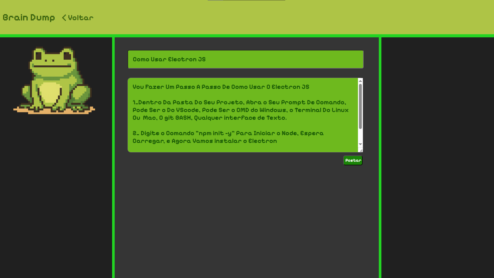

O que é
O Braindump Tem o Intuito De Ser Um Aplicativo Na Qual Você Escolhe um assunto E Explica Ele da Maneira Que Você Quiser, Você Escolhe Um Título E Escreve o Conteúdo Todo Depois Envia e Pronto, Seu Tópico Está Criado. Eu Fiz O Braindump Pensando Em Por em Prática O Método De Feynman, Que Consiste Em Explicar Algo Pra Você Mesmo Pra Saber se Realmente Aprendeu. Sem Colar, Sem Copiar, Sem Xeretar Em Lugar Nenhum, Apenas Você e a Página de Criação, Isso Ajuda A Fixar O Conteúdo Na Sua Mente, e Sempre Que Precisar Voltar Nele, É Só Abrir o App e Tá Tudo Lá Do Jeito Que Você Escreveu.
Exemplo: Criei Um Tópico Sobre Como Usar O Electron, Ponho o Título, E Depois Escrevo As Informações Que Eu Quero Lembrar
Agora Quando eu Quiser Configurar o Electron dnv é só voltar lá naquele tópico
Como Funciona?
Você Tem A Página Principal na qual vai te mostrar os posts que você publicou, A Barra de Pesquisas, A Contagem de Posts e um Botão para criar um novo tópico, Clicando Em Criar tópico você vai para a página de criação na qual se encontram 2 campos de texto,O Campo Superior é onde você põe o Título e o inferior, é Onde Você Escreve o Conteúdo do Seu Tópico, E Embaixo Das Caixas De Texto Há Um Botão Para Publicar Que Quando Clicado Ele Posta um Tópico Com O Título Escrito e uma prévia do conteúdo na Página Principal, Também Dá Pra Postar Apertando a Tecla "Enter"
Como Funciona Tecnicamente
This is the first item’s accordion body. It is shown by default, until the collapse plugin adds the appropriate classes that we use to style each element. These classes control the overall appearance, as well as the showing and hiding via CSS transitions. You can modify any of this with custom CSS or overriding our default variables. It’s also worth noting that just about any HTML can go within the
.accordion-body, though the transition does limit overflow.
This is the second item’s accordion body. It is hidden by default, until the collapse plugin adds the appropriate classes that we use to style each element. These classes control the overall appearance, as well as the showing and hiding via CSS transitions. You can modify any of this with custom CSS or overriding our default variables. It’s also worth noting that just about any HTML can go within the
.accordion-body, though the transition does limit overflow.
This is the third item’s accordion body. It is hidden by default, until the collapse plugin adds the appropriate classes that we use to style each element. These classes control the overall appearance, as well as the showing and hiding via CSS transitions. You can modify any of this with custom CSS or overriding our default variables. It’s also worth noting that just about any HTML can go within the
.accordion-body, though the transition does limit overflow.